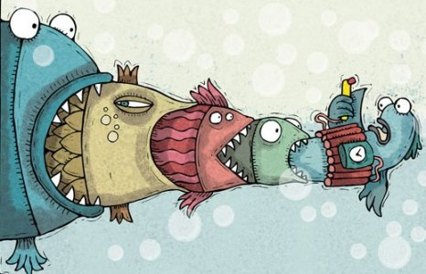
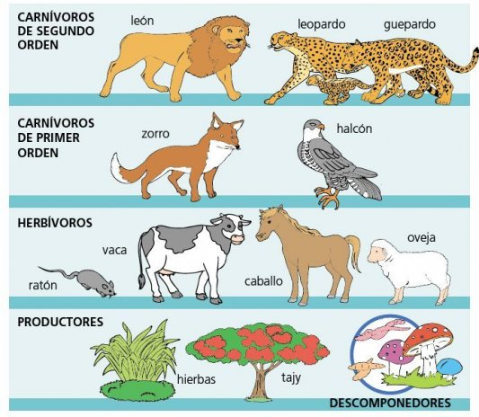
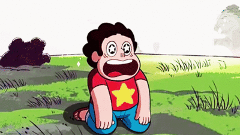

Qué es la cadena alimenticia
La cadena alimenticia, también conocida como cadena trófica, es el proceso por el cual se transfiere energía alimenticia por medio de seres vivos, en donde cada uno de estos se alimenta del anterior y es alimento del siguiente.
La cadena alimenticia es además una corriente de nutrientes y energía establecida entre las distintas especies de un ecosistema en relación a la nutrición del mismo.
El resto de los integrantes de la cadena alimenticia son denominados como los
consumidores. El consumidor primario es quien se alimenta del organismo
autótrofo, es decir, del productor.Quien se alimente del primario
será el consumidor secundario que generalmente es carnívoro, mientras
el tercero sería un ovnivoro o un supercarnívoro.Obviamente el consumidor primario será un herbívoro mientras el cuarto será un necrofago.

La cadena alimenticia cuenta con un último nivel donde ubicamos a
descomponedores y degradadores, quienes actúan sobre organismos muertos,
descomponiendo la materia orgánica y transformándola de nuevo en
inorgánica para devolverla al suelo y a la atmósfera, y así, dar inicio
otra vez a la cadena.
La cadena alimenticia cuenta con ciertos
“eslabones”, los cuales obtienen la energía necesaria para la vida
gracias al eslabón anterior, mientras el productor la obtiene del sol o
por otro medio.
De esta forma, la energía fluirá de forma lineal a
través de la cadena alimenticia, pero se producen pérdidas de energía
cuando se pasa de un eslabón a otro, por lo tanto uno de los últimos
eslabones recibirá menor energía que uno de los primeros.
Debido a esto último, la longitud de la cadena va aproximadamente hasta el cuarto o tercer consumidor.
Algunas veces, en la cadena alimenticia se da la desaparición de un eslabón, lo cual es una completa desventaja ya que:
Con él, desaparecerán el resto de los eslabones siguientes ya que no tendrán alimento.

El nivel anterior quedará superpoblado.Como consecuencia de los dos puntos anteriores, los niveles más bajos quedarán en desequilibrio.
Este suceso ocurre en raras ocasiones ya que la cadena alimenticia en sentido estricto no existe.
Cuando desaparezca un eslabón,
aparecerá otro consumidor, por lo tanto el
ecosistema rara vez variará, pero de todas formas se debe mantener la
mano del hombre alejada
del tema ya que si queremos lograr una mejor ecología es mejor permitir que la cadena alimenticia siga con sus procesos.
Asi que ya sabes.....
